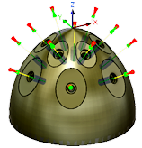

Disabled.
Only current plane
Enabled.
Multi-axis selection
Select to include holes in other planes. The default is to search for holes in the current active plane, where the Z axis represents the hole centerline.
|
 |
Disabled. |
Enabled. |
Multi-axis selections will create 3+2 position for 4th axis rotary or full 5 axis machines. Use the Limit Angle to restrict tilting motion.